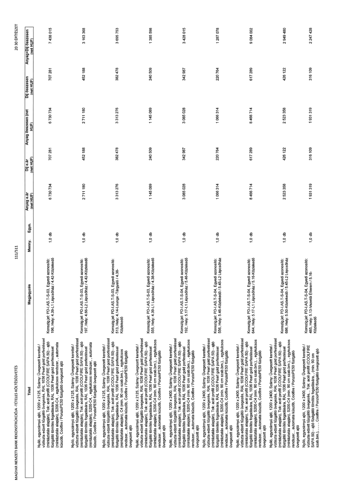

| Tétel | Megjegyzés | Menny. | Egys. | Anyag e.ár (net HUF) | Díj e.ár (net HUF) | Anyag összesen (net HUF) | Díj összesen (net HUF) | Anyag+Díj összesen (net HUF) |
|---|---|---|---|---|---|---|---|---|
| Nyíló, egyszárnyú ajtó, 1200 x 2125, Szárny: Üvegezett kerettel / víztiszta edzett tűzgátló üvegezés, RAL 1036 Pearl gold porfestéssel (mintáztatás alapján), Tok: acél profil (COOLFIRE SAPA 50) - ajtó füstgátló tömítés fogadására, RAL 1036 Pearl gold porfestéssel (mintáztatás alapján), S200-C4,, egykulcsos rendszer, , automata küszöb, Coolfire / PonzioPE50 füstgátló üvegezett ajtó | Konszig.jel: PD-I.AS.T-S-03, Egyedi azonosító: 196, Hely: 4.39-L1 Lépcsőház / 4.42-Közlekedő | 1,0 | db | 6 730 734 | 707 281 | 6 730 734 | 707 281 | 7 438 015 |
| Nyíló, egyszárnyú ajtó, 1200 x 2125, Szárny: Üvegezett kerettel / víztiszta edzett tűzgátló üvegezés, RAL 1036 Pearl gold porfestéssel (mintáztatás alapján), Tok: acél profil (COOLFIRE SAPA 50) - ajtó füstgátló tömítés fogadására, RAL 1036 Pearl gold porfestéssel (mintáztatás alapján), S200-C4,, egykulcsos rendszer, , automata küszöb, Coolfire / PonzioPE50 füstgátló üvegezett ajtó | Konszig.jel: PD-I.AS.T-S-03, Egyedi azonosító: 197, Hely: 4.66-L2 Lépcsőház / 4.42-Közlekedő | 1,0 | db | 2 711 180 | 452 188 | 2 711 180 | 452 188 | 3 163 368 |
| Nyíló, egyszárnyú ajtó, 1200 x 2125, Szárny: Üvegezett kerettel / víztiszta edzett tűzgátló üvegezés, RAL 1036 Pearl gold porfestéssel (mintáztatás alapján), Tok: acél profil (COOLFIRE SAPA 50) - ajtó füstgátló tömítés fogadására, RAL 1036 Pearl gold porfestéssel (mintáztatás alapján), S200-C4,, egykulcsos rendszer, , automata küszöb, Coolfire / PonzioPE50 füstgátló üvegezett ajtó | Konszig.jel: PD-I.AS.T-S-03, Egyedi azonosító: 513, Hely: 4.14-Lounge -Tárgyaló / 4.38- Közlekedő | 1,0 | db | 3 313 276 | 382 478 | 3 313 276 | 382 478 | 3 695 753 |
| Nyíló, egyszárnyú ajtó, 1200 x 2125, Szárny: Üvegezett kerettel / víztiszta edzett tűzgátló üvegezés, RAL 1036 Pearl gold porfestéssel (mintáztatás alapján), Tok: acél profil (COOLFIRE SAPA 50) - ajtó füstgátló tömítés fogadására, RAL 1036 Pearl gold porfestéssel (mintáztatás alapján), S200-C4 (min. 90 cm szab.bm.), , egykulcsos rendszer, , automata küszöb, Coolfire / PonzioPE50 füstgátló üvegezett ajtó | Konszig.jel: PD-I.AS.T-S-03, Egyedi azonosító: 555, Hely: 4.39-L1 Lépcsőház / 4.38- Közlekedő | 1,0 | db | 1 145 089 | 240 509 | 1 145 089 | 240 509 | 1 385 598 |
| Nyíló, egyszárnyú ajtó, 1200 x 2400, Szárny: Üvegezett kerettel / víztiszta edzett tűzgátló üvegezés, RAL 1036 Pearl gold porfestéssel (mintáztatás alapján), Tok: acél profil (COOLFIRE SAPA 50) - ajtó füstgátló tömítés fogadására, RAL 1036 Pearl gold porfestéssel (mintáztatás alapján), S200-C4 (min. 90 cm szab.bm.), , egykulcsos rendszer, , automata küszöb, Coolfire / PonzioPE50 füstgátló üvegezett ajtó | Konszig.jel: PD-I.AS.T-S-04, Egyedi azonosító: 192, Hely: 5.17-L1 Lépcsőház / 5.46-Közlekedő | 1,0 | db | 3 085 028 | 342 987 | 3 085 028 | 342 987 | 3 428 015 |
| Nyíló, egyszárnyú ajtó, 1200 x 2400, Szárny: Üvegezett kerettel / víztiszta edzett tűzgátló üvegezés, RAL 1036 Pearl gold porfestéssel (mintáztatás alapján), Tok: acél profil (COOLFIRE SAPA 50) - ajtó füstgátló tömítés fogadására, RAL 1036 Pearl gold porfestéssel (mintáztatás alapján), S200-C4 (min. 90 cm szab.bm.), , egykulcsos rendszer, , automata küszöb, Coolfire / PonzioPE50 füstgátló üvegezett ajtó | Konszig.jel: PD-I.AS.T-S-04, Egyedi azonosító: 556, Hely: 5.46-Közlekedő / 5.45-L2 Lépcsőház | 1,0 | db | 1 066 314 | 220 764 | 1 066 314 | 220 764 | 1 287 078 |
| Nyíló, egyszárnyú ajtó, 1200 x 2400, Szárny: Üvegezett kerettel / víztiszta edzett tűzgátló üvegezés, RAL 1036 Pearl gold porfestéssel (mintáztatás alapján), Tok: acél profil (COOLFIRE SAPA 50) - ajtó füstgátló tömítés fogadására, RAL 1036 Pearl gold porfestéssel (mintáztatás alapján), S200-C4 (min. 90 cm szab.bm.), , egykulcsos rendszer, , automata küszöb, Coolfire / PonzioPE50 füstgátló üvegezett ajtó | Konszig.jel: PD-I.AS.T-S-04, Egyedi azonosító: 644, Hely: 5.17-L1 Lépcsőház / 5.16-Közlekedő | 1,0 | db | 8 466 714 | 617 289 | 8 466 714 | 617 289 | 9 084 002 |
| Nyíló, egyszárnyú ajtó, 1200 x 2400, Szárny: Üvegezett kerettel / víztiszta edzett tűzgátló üvegezés, RAL 1036 Pearl gold porfestéssel (mintáztatás alapján), Tok: acél profil (COOLFIRE SAPA 50) - ajtó füstgátló tömítés fogadására, RAL 1036 Pearl gold porfestéssel (mintáztatás alapján), S200-C4 (min. 90 cm szab.bm.), , egykulcsos rendszer, , automata küszöb, Coolfire / PonzioPE50 füstgátló üvegezett ajtó | Konszig.jel: PD-I.AS.T-S-04, Egyedi azonosító: 686, Hely: 5.50-Közlekedő / 5.45-L2 Lépcsőház | 1,0 | db | 2 523 358 | 426 122 | 2 523 358 | 426 122 | 2 949 480 |
| Nyíló, egyszárnyú ajtó, 1200 x 2400, Szárny: Üvegezett kerettel / víztiszta edzett tűzgátló üvegezés, Tok: acél profil (COOLFIRE SAPA 50) - ajtó füstgátló tömítés fogadására, ( min. 90 cm szab.bm.) , , Coolfire / PonzioPE50 füstgátló üvegezett ajtó | Konszig.jel: PD-I.AS.T-S-04, Egyedi azonosító: 485, Hely: 5.13-Vezetői Étterem / 5.16- Közlekedő | 1,0 | db | 1 931 319 | 316 109 | 1 931 319 | 316 109 | 2 247 428 |
